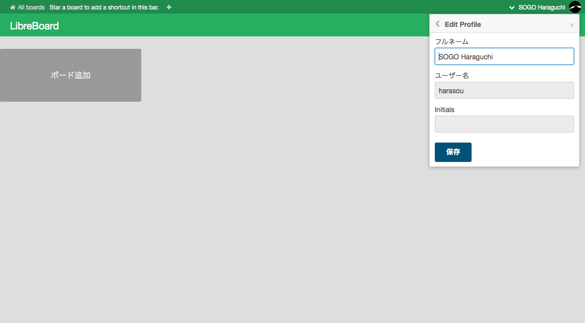
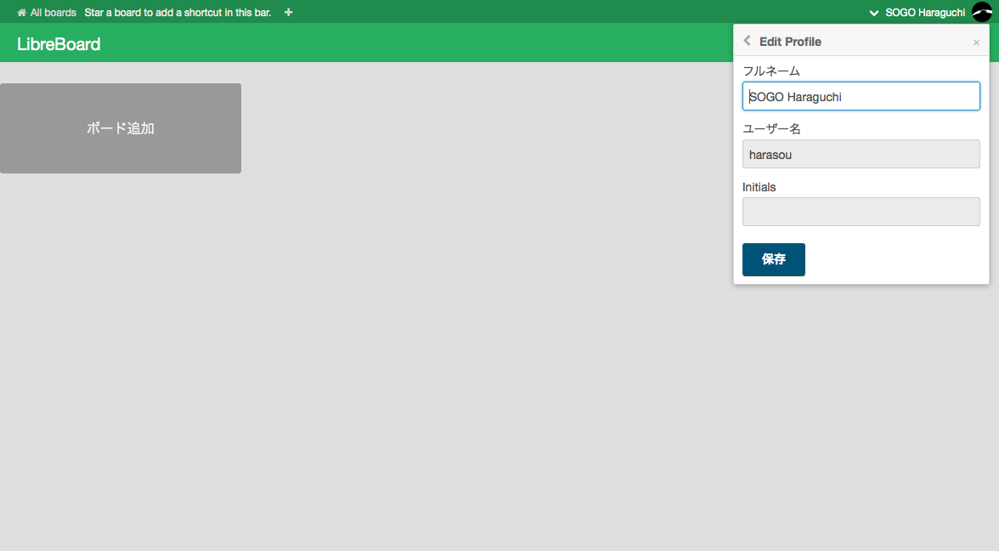

trello クローンの Libreboard を動かしてみた
社内で便利に活用しているかんばんソフトtrello 。このクローンである Libreboard を boot2docker で動かしてみた。

Libreboard とは
Libreboard は、node.js のフレームワークである meteor(メテオ) 、DB として MongoDB が使われている trello のクローン。 github に公開されているリポジトリには、Dockerfile が含まれているので、Mac 上の boot2docker で動かしてみる。
環境
- MacOSX Yosemite 10.10.4
- boot2docker v1.7.1
手順
boot2docker を最新化
brew upgrade boot2docker boot2docker update $(boot2docker shellinit)Libreboard のリポジトリを clone
git clone git@github.com:libreboard/libreboard.git cd libreboardLibreboard の docker image を build
docker buildしてみるとエラーになった。$ docker build -t libreboard/libreboard . : Meteor 1.1.0.2 has been installed in your home directory (~/.meteor). Writing a launcher script to /usr/local/bin/meteor for your convenience. To get started fast: $ meteor create ~/my_cool_app $ cd ~/my_cool_app $ meteor Or see the docs at: docs.meteor.com Bower: { [Error: Package autosize not found] stack: [Getter] } Bower: { [Error: git is not installed or not in the PATH] stack: [Getter] } Bower: { [Error: git is not installed or not in the PATH] stack: [Getter] } Bower: { [Error: git is not installed or not in the PATH] stack: [Getter] } Errors prevented bundling: While building the application: packages/bower/plugin/handler.js:191:1: Cannot read property 'name' of undefined (compiling bower.json) at getDependencies (packages/bower/plugin/handler.js:191:1) at packages/bower/plugin/handler.js:203:1 at Function._.each._.forEach (packages/underscore/underscore.js:113:1) at getDependencies (packages/bower/plugin/handler.js:202:1) at bowerHandler (packages/bower/plugin/handler.js:65:1) at Package (packages/bower/plugin/handler.js:229:1) The command '/bin/sh -c bash $METEORD_DIR/on_build.sh' returned a non-zero code: 1git がない模様。とりあえず、失敗したコンテナとイメージを削除しておく。
docker ps -a docker rm <コンテナID> docker images docker rmi <イメージID>meteorhacks/meteord の再作成
Libreboard の Dockerfile を見ると
meteorhacks/meteord:onbuildの image を参照している。タグを含めると docker の image は以下のような階層になっている。libreboard/libreboard └ meteorhacks/meteord:onbuild └ meteorhacks/meteord:base └ debian:wheezyBower 実行時に git がないことが原因のようなので、
meteorhacks/meteord:baseのイメージに git を含めてやる。git を組み込んだ meteorhacks/meteord:onbuild を作成
git clone https://github.com/meteorhacks/meteord.git cd meteord/base/ vim scripts/lib/install_base.sh--- a/scripts/lib/install_base.sh +++ b/scripts/lib/install_base.sh @@ -1,4 +1,4 @@ #!/bin/bash set -e apt-get update -y -apt-get install -y curl bzip2 build-essential python \ No newline at end of file +apt-get install -y curl bzip2 build-essential python gitdocker build -t meteorhacks/meteord:base . cd ../onbuild/ docker build -t meteorhacks/meteord:onbuild .$ docker images REPOSITORY TAG IMAGE ID CREATED VIRTUAL SIZE meteorhacks/meteord onbuild 4878b6e24949 About an hour ago 328.8 MB meteorhacks/meteord base b76d66c56aee About an hour ago 328.8 MB作成した image はこんな感じ。
再度 Libreboard の docker image を build
$ docker build -t libreboard/libreboard . : Bower: { [Error: Package autosize not found] stack: [Getter] } Bower: autosize v3.0.6 successfully installed Bower: perfect-scrollbar v0.6.2 successfully installed npm WARN package.json meteor-dev-bundle@0.0.0 No description npm WARN package.json meteor-dev-bundle@0.0.0 No repository field. npm WARN package.json meteor-dev-bundle@0.0.0 No README data > fibers@1.0.5 install /tmp/bundle-dir/bundle/programs/server/node_modules/fibers > node ./build.js `linux-x64-v8-3.14` exists; testing Binary is fine; exiting underscore@1.5.2 node_modules/underscore semver@4.1.0 node_modules/semver fibers@1.0.5 node_modules/fibers chalk@0.5.1 node_modules/chalk ├── ansi-styles@1.1.0 ├── escape-string-regexp@1.0.3 ├── supports-color@0.2.0 ├── has-ansi@0.1.0 (ansi-regex@0.2.1) └── strip-ansi@0.3.0 (ansi-regex@0.2.1) eachline@2.3.3 node_modules/eachline └── type-of@2.0.1 source-map-support@0.2.8 node_modules/source-map-support └── source-map@0.1.32 (amdefine@0.1.0) ---> 62cc7d9b8cf4 Removing intermediate container b32b995a9f68 Removing intermediate container 248acfcb67b9 Step 1 : MAINTAINER Maxime Quandalle <maxime@quandalle.com> ---> Running in 55215a871ca7 ---> 0c5dc1c69d71 Removing intermediate container 55215a871ca7 Successfully built 0c5dc1c69d71npm の WARN は出ているが、とりあえず build 完了。
動作確認
コンテナの起動
Libreboard の Dockerfile に書かれている通り、コンテナを 2つ起動する。 なお、２つ目のコンテナが使用するイメージは、先ほど build したタグ
libreboard/libreboardを指定。docker run -d --name libreboard-db mongo docker run -d --link "libreboard-db:db" -e "MONGO_URL=mongodb://db" \ -e "ROOT_URL=http://example.com" -p 8080:80 libreboard/libreboard$ docker ps CONTAINER ID IMAGE COMMAND CREATED STATUS PORTS NAMES e97fcb032d48 libreboard/libreboard "/bin/sh -c 'bash $M 6 seconds ago Up 5 seconds 0.0.0.0:8080->80/tcp cranky_wilson 45bcc5b47ffc mongo "/entrypoint.sh mong About a minute ago Up About a minute 27017/tcp libreboard-dbVirtualBox でポートフォワーディング
boot2docker 上では、8080 でアクセスすることができるが、Mac 上からはアクセスできない。このため、VirtualBox でポートフォワーディングの設定を行う。

ブラウザからアクセス
http://localhost:8080/ 適当にアカウント作ってログインして、カード作ってみた。
ログイン画面。
 ボードの追加。
言語とプロファイルを設定。

カードの追加。Markdown もいけるっぽい。
ボードの追加。
言語とプロファイルを設定。

カードの追加。Markdown もいけるっぽい。